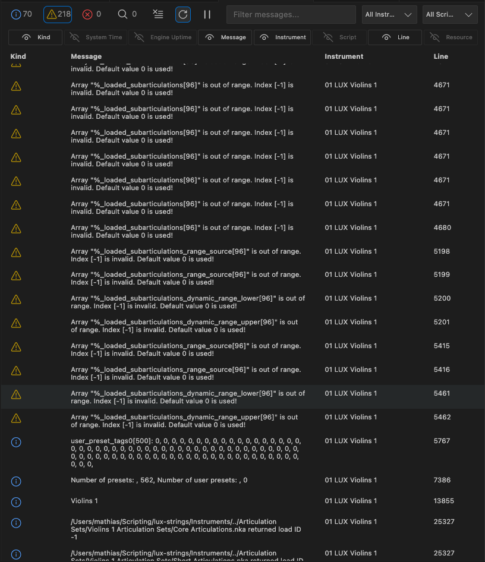
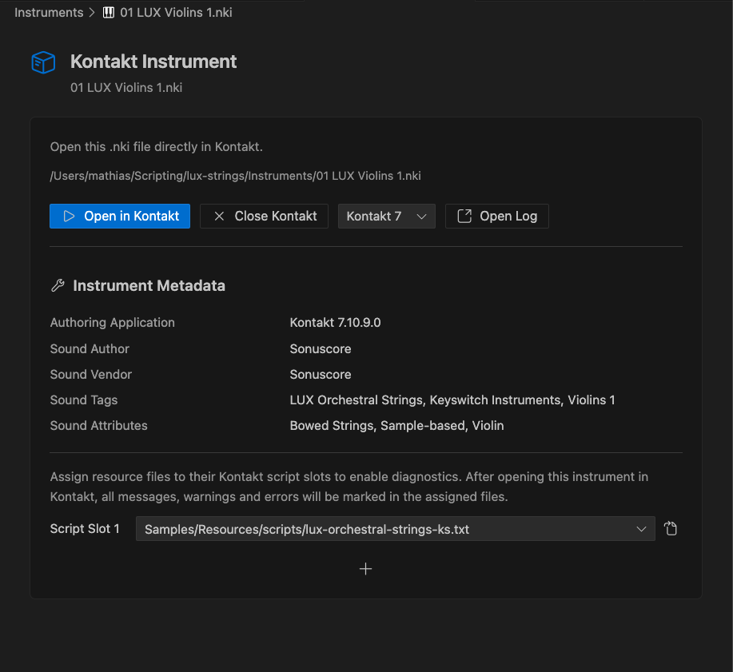

Kontakt Integration
CKSP Tools can launch Kontakt, open instruments, read runtime messages, connect log rows to resource scripts, and expose Kontakt diagnostics directly inside VS Code. The goal is to keep the edit–compile–test loop in one workspace.
Kontakt controls
The Kontakt view in the CKSP Sidebar provides the main runtime actions:
- start Kontakt
- close the running Kontakt instance
- open an
.nkiinstrument in Kontakt - open the Kontakt Log Viewer
- open the Kontakt Lua panel
The default Kontakt version comes from Project Settings. If none is selected, the extension asks for a version when an action requires it. Available Kontakt installations are detected and stored in the settings; paths can also be configured manually.
Windows
In the current Windows integration, only one .nki file can be open in Kontakt at a time.
Kontakt Log Viewer
The Kontakt Log Viewer is the central debugging surface in CKSP Tools and can replace Creator Tools for many day-to-day logging workflows.

Open it from:- the CKSP Sidebar
CKSP: Open Kontakt Login the Command Palette- the custom NKI editor
The table can display:
| Column | Content |
|---|---|
| Kind | Info, warning, error, or trace level |
| System Time | Timestamp from the host system |
| Engine Uptime | Kontakt engine time associated with the message |
| Message | KSP log content |
| Instrument | Instrument that emitted the message |
| Script | Kontakt script slot |
| Line | Reported resource-script line |
| Resource | Assigned resource script, when known |
Filter messages
Use the toolbar to filter by:
- message text
- log level: Info, Warning, Error, or Trace
- instrument
- script slot
Counts for each level remain visible in the toolbar, making it easy to see whether a filter is hiding other messages.
Pause and clear
Pause the log when you need to inspect the current rows without the table changing. Clear removes the collected entries.
Clear Log: Cmd+Backspace
Clear Log: Ctrl+Backspace
Copy data
The context menu and shortcuts support copying a single cell, all message texts, or the full table.
| Action | macOS | Windows / Linux |
|---|---|---|
| Copy cell content | Shift+C | Shift+C |
| Copy all messages | Cmd+Shift+C | Ctrl+Shift+C |
Source navigation and diagnostics
Kontakt log rows can be connected to the resource script that produced them. Once a resource file is assigned to an instrument and script slot, CKSP Tools can open the matching file and briefly highlight the reported line.
Use Cmd+Left Button on macOS or Ctrl+Left Button on Windows/Linux on a log row:
- if a mapping already exists, the assigned file opens at the reported line
- if no mapping exists, CKSP Tools offers to assign a resource file to that instrument and script slot

Problems tab
Mapped Kontakt errors, warnings, and information messages can also appear as VS Code diagnostics:
- inline in the resource script
- with native VS Code severity colors
- in the Problems tab
Script-slot mappings
Diagnostics and source navigation require CKSP Tools to know which resource script belongs to each instrument and Kontakt script slot. Create the mapping in the NKI editor or directly from a log row.
NKI editor and script-slot mappings

Opening an .nki file in VS Code uses the custom Kontakt Instrument editor.
It provides:
- instrument file name and path
- Open in Kontakt and Close Kontakt actions
- Kontakt version selection for this instrument
- Open Log action
- readable instrument metadata
- resource-script assignment for Kontakt script slots
Kontakt version per instrument
A workspace has a default Kontakt version, but an individual .nki can store its own preferred version. This is useful when one project contains several instruments or must be tested with different Kontakt releases.
Assign script slots
Each used Kontakt script slot can point to a resource script:
Mappings enable source navigation, diagnostics, and quick access to the correct generated script. The editor presents recognized resource scripts in dropdowns; additional slots can be revealed with the plus action.
Resources, pictures, and performance files
Select the project's .nkr file under Resource Container in the CKSP Sidebar. This establishes the resource context used by several editor and Kontakt features.
The selection affects:
- resource script discovery and script-slot dropdowns
- resource-picture completion
.nckpparsing and validation- completion for UI controls defined in performance views
Resource picture completion
When the resource container is known, CKSP Tools can suggest project images in suitable string contexts such as after :=, ,, or (. This avoids manually copying resource names from the file system.
Path completion
Import and path completion suggests the next path segment, making nested project structures easier to navigate while typing.
.nckp performance views
CKSP Tools opens .nckp files as JSON, applies a JSON Schema, and can offer UI controls from the performance view as CKSP/KSP completion items.
If resource completion is missing
Confirm that Resource Container points to a valid .nkr, then run CKSP: Reindex Workspace.
Lua output
Scripts executed through the Kontakt Lua API can write to a dedicated Kontakt Lua panel in VS Code.
The setting cksp.luaOutputDestination selects the destination:
| Value | Destination |
|---|---|
kontakt lua |
Dedicated Kontakt Lua panel |
output |
Regular VS Code Output panel |
Open the Lua panel from the CKSP commands or its VS Code panel view.
Connect logs to a project
- Select the project's resource container in the CKSP Sidebar.
- Open the
.nkifile in VS Code. - Choose the Kontakt version and open the instrument through the NKI editor.
- Assign each used script slot to its resource
*.txtfile. - Open the Kontakt Log.
- Click a message to navigate to its source line.
- Work through mapped errors and warnings in the Problems tab.
Next steps
-
Configure the workspace
Review Kontakt paths, mappings, log appearance, and Lua output settings.
-
Solve connection issues
Diagnose missing logs, source mappings, Kontakt detection, and resource completion.